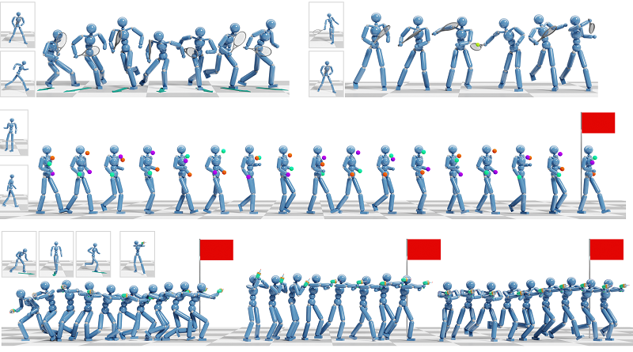

Composite Motion Learning with Task Control
1Clemson University,
2University of California, Merced,
3Roblox
ACM Transactions on Graphics (SIGGRAPH 2023)

Abstract
We present a deep learning method for composite and task-driven motion control for physically simulated characters. In contrast to existing data-driven approaches using reinforcement learning that imitate full-body motions, we learn decoupled motions for specific body parts from multiple reference motions simultaneously and directly by leveraging the use of multiple discriminators in a GAN-like setup. In this process, there is no need of any manual work to produce composite reference motions for learning. Instead, the control policy explores by itself how the composite motions can be combined automatically. We further account for multiple task-specific rewards and train a single, multi-objective control policy. To this end, we propose a novel framework for multi-objective learning that adaptively balances the learning of disparate motions from multiple sources and multiple goal-directed control objectives. In addition, as composite motions are typically augmentations of simpler behaviors, we introduce a sample-efficient method for training composite control policies in an incremental manner, where we reuse a pre-trained policy as the meta policy and train a cooperative policy that adapts the meta one for new composite tasks. We show the applicability of our approach on a variety of challenging multi-objective tasks involving both composite motion imitation and multiple goal-directed control
Downloads
Bibtex
@article{composite2023,
author = {Xu, Pei and Shang, Xiumin and Zordan, Victor and Karamouzas, Ioannis},
title = {Composite Motion Learning with Task Control},
journal={ACM Transactions on Graphics},
volume={42},
number={4},
articleno = {93},
year={2023},
publisher={ACM New York, NY, USA}
}